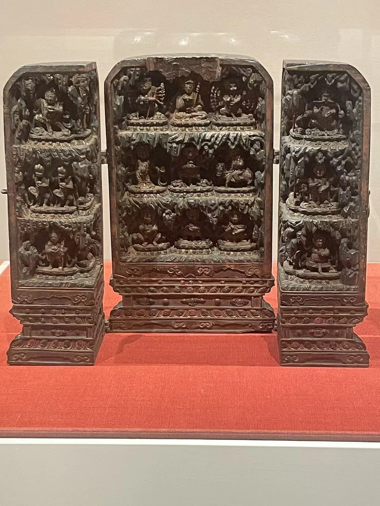

便携木佛龛
克利夫兰美术馆
04 / CLOSE LOOKING

打开的旅行佛龛像一座可以携带的小型建筑。毗卢遮那与八大菩萨围绕中央展开，合拢时又回到紧凑的物件尺度。它的克什米尔风格关联，值得与产地争议同时保留。再与约1500年的西藏木龛并看，可以观察不同时期如何用木材、色彩和开启的结构，组织随身礼拜的空间。 [06]
细看：中央与侧翼的关系；木质结构的开合方式；人物的体量、衣纹与残彩。
克利夫兰美术馆
图片按各自比例展示，实物不等大。

木、矿物颜料、金属
[47]作品基本资料据现场展签及下列馆方记录整理；文字中的观看描述基于这里的现场照片。